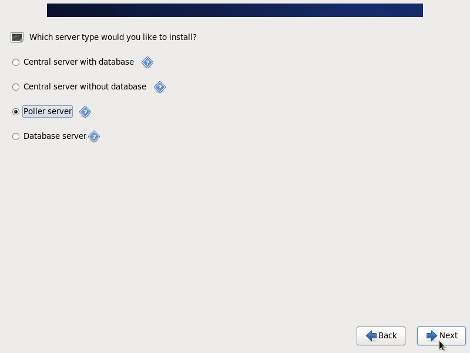

Remote pollers¶
Presentation¶
Remote servers (also called pollers) are monitoring servers equipped with a scheduler and a broker module. Their function is to monitor the equipment and send the results to the Centreon central server (to display the results…).
Installation¶
The installation process is identical to a Centreon central server installed from the ISO file of Centreon.
Note
Refer to the documentation: installation
For the question Which server type would you like to install? choose the option Poller server.
